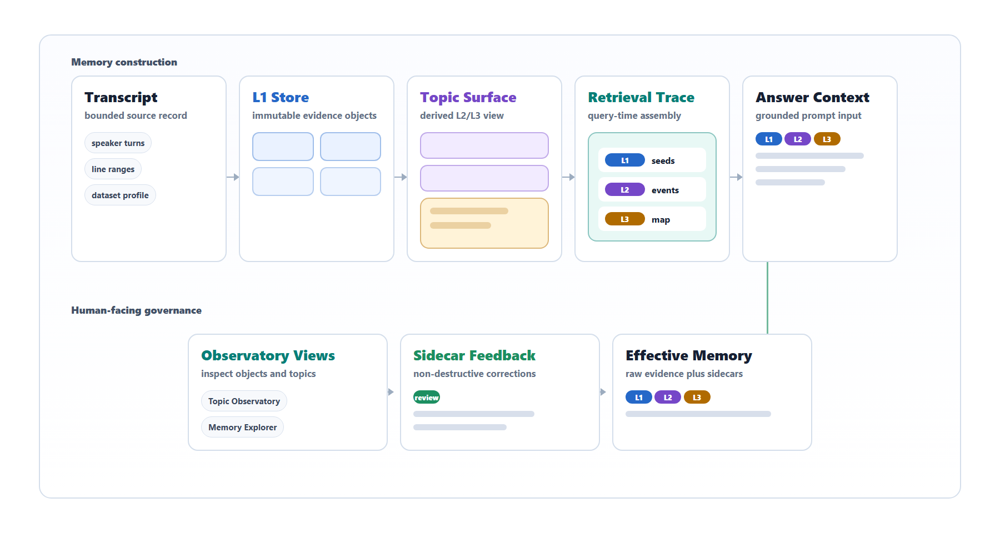
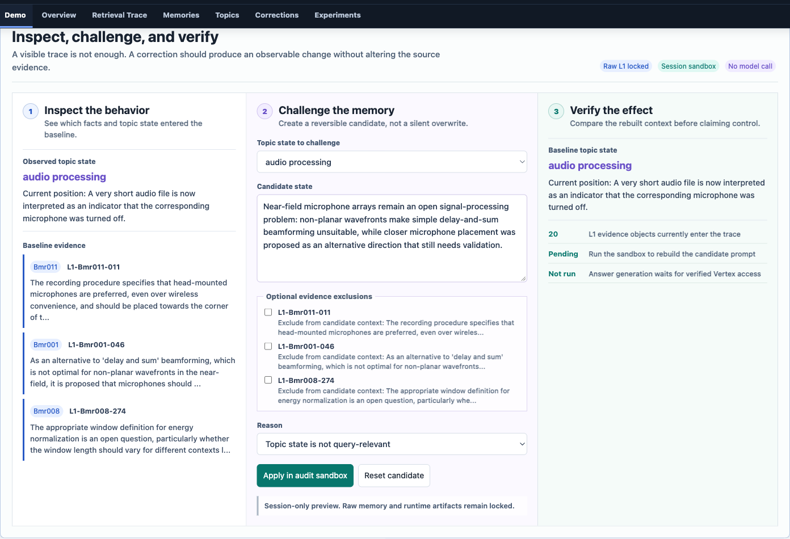
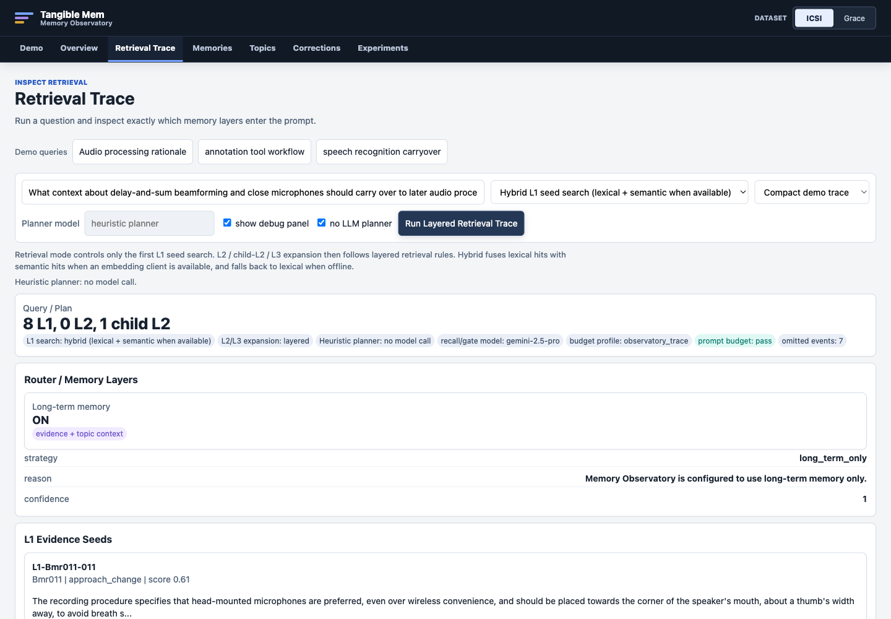
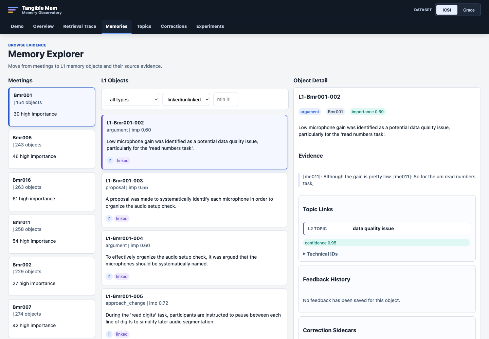
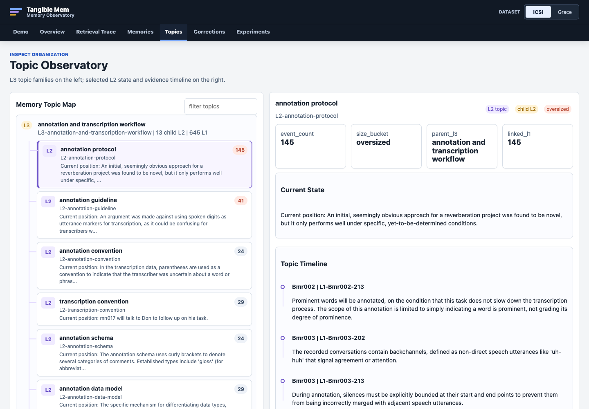

Evidence objects
Source-grounded meeting memories with transcript evidence and provenance.
Immutable source layerResearch decisions, rationales, and open questions evolve across meetings, yet many AI assistants reduce that history to a short chat window or an opaque set of retrieved chunks. Tangible Mem is a hierarchical memory system and inspection workbench for long-term research meetings. It preserves source-grounded evidence as immutable L1 objects, derives reusable L2 topic states and L3 topic-family navigation, and exposes the resulting retrieval path through Memory Observatory.
The interface lets people inspect which evidence and topic context enter a prompt, compare retrieval strategies, and record corrections through sidecars without overwriting raw evidence. The current implementation supports technical walkthroughs and preliminary evaluations on internal research meetings and the public ICSI meeting corpus; a human-subject study has not yet been completed.
Each layer has a different evidence status. Derived topic structure supports navigation and synthesis, while factual claims remain connected to L1 evidence.
Source-grounded meeting memories with transcript evidence and provenance.
Immutable source layerPersistent topic summaries and selected event timelines across meetings.
Derived contextHigher-level navigation for related topic states when collections grow large.
Navigation, not evidenceHuman review changes the effective memory view without rewriting raw L1.
Non-destructive control
The live system remains a FastAPI application. This project page presents static captures from the current ICSI artifact-backed interface rather than simulating a backend on GitHub Pages.

Closed-loop memory audit Preview a reversible correction and compare the rebuilt context.
Retrieval Trace See which evidence and topic layers enter the model prompt.
Memory Explorer Move from meetings to memory objects and their source evidence.
Topic Observatory Inspect persistent topic states, families, and linked L1 evidence.These two evaluations answer different questions and are intentionally reported separately. Neither is evidence from a completed user study.
A preliminary comparison using Gemini 2.5 Pro for answer generation and judging. Full Context is an uncapped upper-bound condition.
| Method | Quality / 5 | Avg. tokens |
|---|---|---|
| Full Context | 4.894 | 81,069 |
| RAG Baseline | 4.507 | 21,284 |
| Layered Memory | 4.789 | 14,115 |
Layered Memory scored below uncapped Full Context and above the tested RAG baseline while using substantially less prompt context. This is not a claim of general superiority.
A retrieval and evidence-coverage comparison. No answer generation or answer-quality judging was used.
| Method | Expected L1 recall | Avg. tokens |
|---|---|---|
| Full Context L1 | 1.0000 | 575,199 |
| Lexical RAG | 0.5583 | 2,370 |
| Layered Memory | 0.8958 | 7,358 |
The layered configuration recovered more expected source evidence than top-20 lexical RAG at a larger—but still far smaller than full-context—prompt budget.